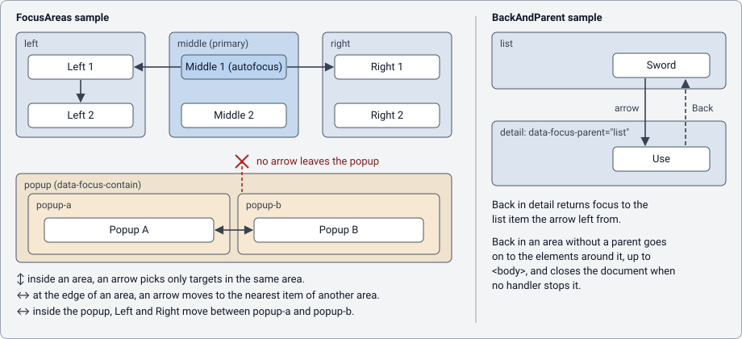
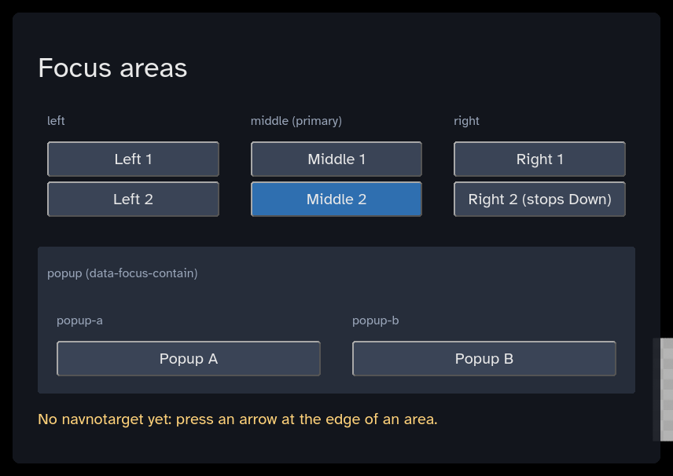
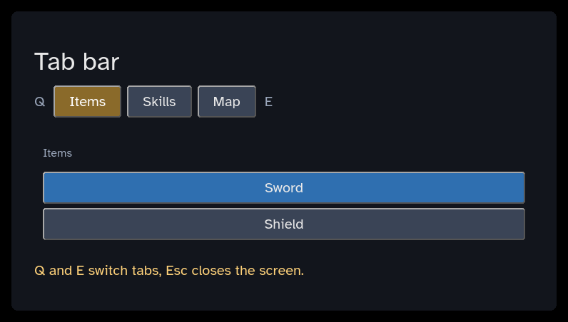

Navigation reference¶
The rules behind Navigation: focus areas, leaving an area, redirecting an arrow, containing focus,
navnotarget, Back and the parent area, the tab bar and focus requests. The tutorial builds one screen from the
BackAndParent sample; the samples quoted here are FocusAreas, BackAndParent, TabBar and FocusRequest (Samples).
Focus areas¶
data-focus-area="<name>" makes an element one area: an arrow inside it picks only targets in the same area. data-focus-primary
marks the area that gets focus first, and autofocus on one of its elements is where it lands. A document whose focus is
nowhere moves nothing on the first arrow, so give the entry element autofocus.

<div class="fa-area" data-focus-area="left">
<p class="fa-label">left</p>
<button id="fa-left-1" class="fa-item">Left 1</button>
<button id="fa-left-2" class="fa-item">Left 2</button>
</div>
<div class="fa-area" data-focus-area="middle" data-focus-primary="">
<p class="fa-label">middle (primary)</p>
<button id="fa-middle-1" class="fa-item" autofocus="">Middle 1</button>
<button id="fa-middle-2" class="fa-item">Middle 2</button>
</div>
A <button> is a navigation stop by default. A div or span needs tab-index: auto; nav: auto.

Leaving an area¶
At the edge of an area an arrow moves focus to the nearest item of another area. This needs nav-<direction>: auto on
the focused element for that direction; buttons and other form controls get it from the default style sheet. #id moves
focus to the named element wherever it is, in this area or another. Any other value (none, tree-order, horizontal,
vertical) or no nav at all never leaves the area. Focus does not wrap around.
Limits
- A non-form element without
tab-index: auto; nav: autotakes no arrow: nothing moves and nonavnotargetis sent. - Tab moves nothing in a document with focus areas, except in a focused text field.
Redirecting an arrow¶
Two attributes on an area take an arrow before the spatial search.
data-nav-left, -right, -up and -down hold a selector. When focus is inside the area and that arrow is pressed, the
first visible element in the area that matches is clicked and focus does not move. A selector with no visible match
logs a warning and the arrow still moves nothing. A quantity row that steps with Left and Right:
<div data-focus-area="details" data-nav-left="#qty-minus" data-nav-right="#qty-plus">, where #qty-minus and
#qty-plus are the row's step buttons.
data-focus-down="<area>" makes Down enter that area; an empty value enters the primary area. Only Down is redirected:
<div data-focus-area="bar" data-focus-down="list"> sends Down from the bar into the area list.
Containing focus¶
data-focus-contain makes an area and every area inside it one container. A leave from inside targets only the other
areas of the container, never outside it. Use it for a popup.
<div class="fa-popup" data-focus-area="popup" data-focus-contain="">
<p class="fa-label">popup (data-focus-contain)</p>
<div class="fa-columns">
<div class="fa-area" data-focus-area="popup-a">
<p class="fa-label">popup-a</p>
<button id="fa-popup-a" class="fa-item">Popup A</button>
</div>
<div class="fa-area" data-focus-area="popup-b">
<p class="fa-label">popup-b</p>
<button id="fa-popup-b" class="fa-item">Popup B</button>
</div>
</div>
</div>
Left and Right move between popup-a and popup-b; no arrow leaves the popup.
When an arrow finds nothing: navnotarget¶
When the search for an arrow finds no target in the area, the document sends navnotarget to the focused element. It
bubbles and can be cancelled. Its parameters:
| Parameter | Value |
|---|---|
ev.direction |
left, right, up or down |
ev.area |
the data-focus-area of the focused element's area, '' outside one |
ev.target_area |
the area focus is about to leave into, '' when there is none |
<body data-model="areas" data-event-navnotarget="call('', 'NoTarget', ev.direction, ev.area, ev.target_area)">
stopPropagation() cancels the move and focus stays. "Right 2" stops Down only; Down there would leave into the popup,
and Left still bubbles to <body>:
<button id="fa-right-2" class="fa-item" data-event-navnotarget="callIf(ev.direction == 'down', '', 'Cancelled', ev.direction, ev.area, ev.target_area); stopPropagation(ev.direction == 'down')">Right 2 (stops Down)</button>
navnotarget is sent only when the focused element's nav-<direction> for that arrow is auto, tree-order, or
horizontal / vertical along the arrow's own axis. It is not sent when a listener or a control already handled the
key, such as a caret move in a text field or an open select.
Back and the parent area¶
Back (see Events) in a child area returns focus to its parent area, even when <body> handles Back.
Back in an area without a parent goes on to the elements around the area, up to <body>, and closes the document
when no handler stops it. The BackAndParent sample has a list area and a detail area:
<body data-model="back" data-event-back="call('', 'CountBack')">
<div class="bp-area" data-focus-area="list" data-focus-primary="">
<button id="bp-sword" class="bp-item" autofocus="" data-event-click="call('', 'Select', 'Sword')">Sword</button>
</div>
<div class="bp-area" data-focus-area="detail" data-focus-parent="list" data-focus-exit="#bp-done">
<button id="bp-use" class="bp-item" data-event-click="call('', 'Use')">Use</button>
<button id="bp-done" class="bp-item" data-event-click="call('', 'Exit')">Done</button>
</div>
</body>
The block is an excerpt: the buttons "Shield" and "Potion" of list are left out.
data-focus-parent="list": Back indetailreturns focus to thelistitem that the arrow left from. The item is remembered only when focus entereddetailby a leave fromlist.data-focus-exit="#bp-done": when Back leavesdetail, the first match of the selector is clicked, soExitruns. A direct click on "Done" runsExittoo but does not leave the area.data-event-backon<body>hears every Back that is not a return to a parent area. It does not callstopPropagation(), so a Back inliststill closes the document.
The order of one Back:
- The document's back sound plays, if a style sheet declares one (Sounds).
- If a drag is being carried, it is cancelled and the Back ends (Drag and drop).
- Else, if an area entry is pending, it is cancelled and the Back ends.
- The
backevent runs from the focused element up to its area. A handler there that stops it handles the Back. - If the area has a
data-focus-parentthat exists and has something to focus, focus returns to it. - Otherwise the event goes on to the elements above the area, up to
<body>. A handler that stops it handles the Back. - Otherwise the document closes.
Each handler runs at most once per Back. A parent that is missing, has nothing to focus or is the area itself counts as
no parent, so a screen needs only one handler on <body> and a data-focus-parent on each child area. With nothing
focused, the Back starts at the active area, as if focus were in it.
Back from game code¶
UArcRmlViewportSubsystem::PostBack(Document) is BlueprintCallable and posts the same Back as the key. The sample's
"Back" button, outside every area, calls it from its view model; the WorldContextObject is the player controller
(World context object):
void UArcRmlSamplesBackAndParentViewModel::PressBack(UObject* WorldContextObject)
{
const APlayerController* Player = Cast<APlayerController>(WorldContextObject);
const ULocalPlayer* LocalPlayer = Player ? Player->GetLocalPlayer() : nullptr;
UArcRmlViewportSubsystem* Viewport = LocalPlayer ? LocalPlayer->GetSubsystem<UArcRmlViewportSubsystem>() : nullptr;
if (Viewport)
{
Viewport->PostBack(ArcRmlSamplesBackAndParent::Document);
}
}
The excerpt is the one function. ArcRmlSamplesBackAndParent::Document is the FArcRmlDocumentRef of BackAndParent.rml, declared in the same file. PostBack returns false and posts nothing when the document is not open, is leaving, its view is hidden, its
input-mode is game or its view takes no input.
Tab bar¶
The TabBar sample has three tabs and a content area for each. data-hotkey-cycle="<previous> <next>" on the bar names two
UI actions of the document's input mapping context (IA_Sample_PrevTab, IA_Sample_NextTab: Q and E, gamepad
shoulders); Input and gamepad shows how a document names its mapping context.
<meta name="input-mapping" content="/ArcRmlUISamples/UI/Rml/TabBar/IMC_Sample_TabBar"/>
<div class="tb-bar" data-focus-area="bar" data-focus-primary="" data-hotkey-cycle="IA_Sample_PrevTab IA_Sample_NextTab">
<button id="tb-tab-items" class="tb-tab" autofocus="" data-attrif-selected="Selected == 0" data-focus-enter="items" data-event-click="call('', 'Select', 0)">Items</button>
<button id="tb-tab-skills" class="tb-tab" data-attrif-selected="Selected == 1" data-focus-enter="skills" data-event-click="call('', 'Select', 1)">Skills</button>
<button id="tb-tab-map" class="tb-tab" data-attrif-selected="Selected == 2" data-focus-enter="map" data-event-click="call('', 'Select', 2)">Map</button>
</div>
<div class="tb-content" data-if="Selected == 0" data-focus-area="items">
<p class="tb-label">Items</p>
<button id="tb-items-sword" class="tb-item">Sword</button>
<button id="tb-items-shield" class="tb-item">Shield</button>
</div>

- The items of the cycle are the visible descendants of the bar with
tab-index: auto(here the three buttons). The step wraps from the last to the first. - The current item is the one that contains the focus, else the first with the
selectedattribute, which the view model keeps withdata-attrif-selected. A value that is not exactly two names is a validator error. - Focus in the bar: the next tab is focused and then clicked, so
Selectruns like a mouse click.data-focus-enter="items"on the tab sends focus into the areaitemsonceSelecthas run and the area is shown, and it lands on the area'sautofocuselement, else its first item. - Focus outside the bar, in a content area: the key only clicks the tab after the
selectedone, and that click'sdata-focus-enterdecides where focus goes. data-focus-enteris read only from a click (a mouse click, gamepad accept or a cycle step), never from a key handler that calls the view model.
Limits
- A cycle item whose
data-focus-enternames an area that also exists in the tab shown now enters that old area. An entry for an area that never appears waits until the next arrow, Enter or Space key; the first Back only cancels it. - When several elements have the same
data-hotkeyordata-hotkey-cycle, the first match of this lookup is used:- The focused element, or its nearest ancestor that has it.
- The first visible one in document order in the focused area.
- The first visible one in document order in the document.
A hotkey on the action wins over a cycle. A second cycle on the same actions (a sub-tab bar, say) steps when focus
is inside it; otherwise the first in that order steps.
- A custom "disabled" element must drop its tab-index itself; only a disabled form control gets focus: none.
Focus requests¶
data-focus-request="<field>" on a focusable element moves focus to it when the view model changes the bound value. The
FocusRequest sample has three "Go to" buttons, each bumping a counter that one text field binds:
<button id="fr-go-name" class="fr-button" autofocus="" data-event-click="call('', 'FocusName')">Go to name</button>
<input id="fr-name" class="fr-field" type="text" data-focus-request="NameFocusSerial"/>
- The first value never focuses. Every later change to a value that is not empty focuses the element, so a view model adds
1 to an
int32for each request. - The focus moves like a navigation move: the element gets
:focus-visible, scrolls into view, and its focus area becomes the active one. Focus areas do not confine it, so a request can leave the area focus is in. - A request on an element that is hidden, disabled or not focusable does nothing. Several requests before one frame give one move to the last element.
- It is the web's
element.focus()for a focus the game starts, for example the first invalid field after a failed submit. A focused text field takes typing again.
Run it by choosing FocusRequest in the samples list.
Run it¶
Play in the map L_ArcRmlSamples and choose FocusAreas, BackAndParent or TabBar in the samples list; Back closes the
document (in BackAndParent, when focus is in the detail area, the first Back returns it to the list). The console commands are ArcRmlSamples.Open <Sample> and ArcRmlSamples.Close (console).